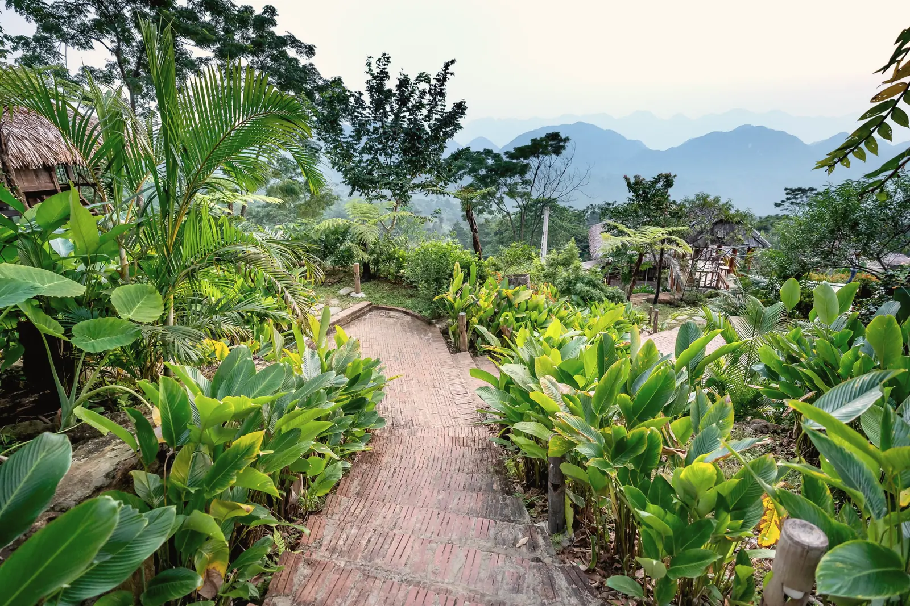

Getting here, and what to expect
Everything you need before you set out: the road, the trains, the seasons, how bookings are confirmed, and the questions guests ask most.
Getting here
- By roadfrom Dhaka4 – 5 h
- Dhaka–Sylhet highway; turn at Sreemangal. Weekend traffic out of Dhaka adds time.
- By trainfrom Dhaka≈ 5 h
- Intercity trains to Sreemangal station; we meet every train (৳800 per car).
- By air + roadfrom Dhaka → Sylhet45 min + 2½ h
- Pickup from Osmani International Airport, ৳6,500 per car.
Times are typical. Weekend and holiday traffic leaving Dhaka can add an hour or more. We send a driver’s note with the final turns when you book.
Schematic, not to scale. Local time in Sreemangal: —
When to come
Nov – Feb
Winter
Cold mornings, mist in the tea until nine, birds at Baikka Beel. Our busiest months; book weekends well ahead.
Bring a warm layer for the evenings.
Mar – Apr
First flush
The new leaf comes in and the estate wakes up. Warm days, the first plucking, and the year’s best tea.
Pre-monsoon storms can arrive in April.
Jun – Sep
Monsoon
Green everything, rain on the roofs, lotus on the lake. Quieter, softer, and cheaper.
Roads are slower; allow extra time.
Oct
Autumn
Clear skies after the rains and long golden afternoons. Puja holidays fill quickly.
The tea walk runs until December.
How bookings work
- Check-in / out
- Check-in from 14:00, check-out by 12:00. Early arrivals can breakfast and wait on the veranda.
- Confirming a stay
- Send a request online, by WhatsApp or by phone. We confirm availability within the hour (08:00–22:00), and a 50% advance by bKash, Nagad, card or bank transfer secures the booking.
- Cancellation
- Free up to 7 days before arrival; the advance is refunded within 10 working days. Within 7 days, the advance can be moved to new dates once within six months.
- Children
- Under 5 stay free. Ages 5–11 sharing with parents: ৳3,000 per night including breakfast and an extra bed.
- Identification
- Please bring a national ID card or passport for every adult guest.
- Drivers
- Drivers’ rooms with meals are available at ৳2,500 per night. Tell us when you book.
- Minimum stay
- Two nights over Friday and Saturday; three nights over Eid, Puja and the 16 Dec – 2 Jan holidays.
Questions guests ask
How far is Kuasha from Dhaka, and how do I get here?
About 190 km. By road it usually takes 4 to 5 hours via the Dhaka–Sylhet highway; we send a map and a driver’s note when you book. Several intercity trains a day run from Dhaka to Sreemangal (about 5 hours) and we meet every train. By air, fly Dhaka to Sylhet (about 45 minutes) and we drive you from Osmani Airport (about 2½ hours).
How do I confirm a booking?
Choose your dates and room and send a request, or message us on WhatsApp. A reservations host calls or writes back within the hour to confirm. A 50% advance by bKash, Nagad, card or bank transfer secures the stay; the balance is paid on arrival.
Is there a minimum stay?
Two nights if your stay includes a Friday or Saturday night, and three nights over Eid, Puja and the end-of-year holidays. Weekday single nights are fine.
Is Kuasha good for families?
Yes. The Lake House sleeps six, Hillside Cottages take an extra bed, and there is a children’s tea walk, bicycles and a shallow end to the pool. Under-5s stay free.
Is there somewhere for our driver to stay?
Yes: clean rooms with meals in the staff quarters at ৳2,500 per night. Please mention it in your request.
When is the best time to come?
November to February for mist and birds, March and April for the first flush, July to September for rain and lotus. October is clear and busy with holidays.
Can we hold a holud, wedding or company retreat here?
Yes, for up to 150 seated guests on the lawn, or the whole estate for about 50 overnight guests. See Gatherings or call our events team.
Is there Wi-Fi and mobile signal?
Fibre Wi-Fi in all rooms and the Long Veranda, with backup power. Mobile 4G is good at the house and patchy in the lower tea sections, which some guests consider a feature.
Talk to a person
Address
Kuasha Estate, off Lawachara RoadSreemangal 3210, Moulvibazar
Bangladesh